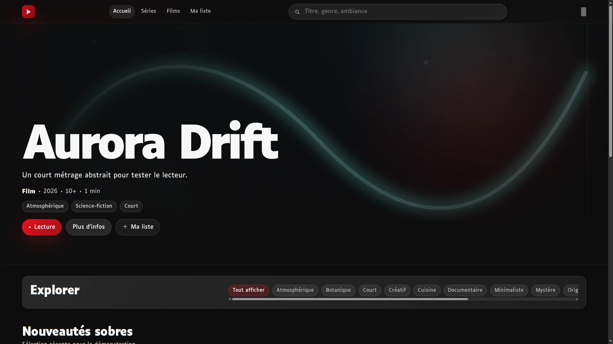

Plateforme de streaming vidéo
FinaliséStreamfolio
Plateforme de streaming full-stack : catalogue, sécurité, administration média et pipeline MP4/HLS avec FFmpeg.
- Objectif
- Concevoir une plateforme vidéo full-stack avec un pipeline média persistant.
- Démonstration
- Sécurité, streaming, traitements asynchrones, stockage objet, tests et CI.
